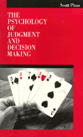

<body bgcolor="#FFFFFF" text="#000000" link="#0000FF" vlink="#CC0000" alink="#CC0000"><center><hr width="350" size="1" align="center" noshade>Psychological research on how people make decisions<hr width="350" size="1" align="center" noshade><p><a href="https://cdcshoppingcart.uchicago.edu/Cart/ChicagoBook.aspx?ISBN=9780877229131&&PRESS=temple" target="_top">Buy this book!</a> | <a href="https://cdcshoppingcart.uchicago.edu/Cart/Cart.aspx?PRESS=temple" target="_top">View Cart</a> | <a href="https://cdcshoppingcart.uchicago.edu/Cart/Cart.aspx?PRESS=temple" target="_top">Check Out</a></p><p></p></center><!--none//--><h1>Psychology of Judgment and Decision Making</h1>
<h3>Scott Plous</h3>
<P>cloth 0-87722-913-9 $49.95, Feb 93, <FONT COLOR=#990033>Out of Print</FONT>
<BR></P><h3 align="center"><P><font color="#996633">8th Annual William James Book Award, American Psychological Association,
1993</font></P>
</H3>
<BLOCKQUOTE><I>"Clearly and engagingly written.... Quite sophisticated in an unassuming way."</I>
<br>&#151<b>Baruch Fischhoff</b>, President, Society for Judgment and Decision Making<I></I></BLOCKQUOTE>
<p>Scott Plous focuses on the social aspects of decision making and includes everyday examples from medicine, law, business, education, and nuclear arms control, among other areas. Intended for non-specialists, this book highlights experimental findings rather than psychological theory and presents information in descriptive prose rather than through mathematics.
<p>In a "Reader Survey" preceding the first chapter, readers are asked to answer questions that are taken from studies discussed later in the book. This brief (and entertaining) exercise allows readers to compare their answers with the responses people gave in the original studies and to better understand their own processes of choosing.
<p>Plous explores the building blocks of judgment and decision making and contrasts historical models of decision making with recent models that take into account various biases in judgment. In addition, he examines judgments made by and about groups and discusses common traps in judgment and decision making.
<BR>&nbsp;<h2>Reviews</h2>
<p><I>"A stunning integration of classic research findings with current approaches to the area.... Readers can experience for themselves the application of this basic research to everyday problems in life."</I>
<br>&#151<b>Elizabeth Loftus</b>, Former President, Division of Experimental Psychology, American
Psychological Association
<p><I>"Comprehensive and readable...a very fine text."</I>
<br>&#151<b>Paul Slovic</b>, President, Decision Research
<p><I>"Excellently written. Simple and lucid, without evading theoretical and philosophical problems."</I>
<br>&#151<b>Willem Wagenaar</b>, Professor of Experimental Psychology, Leiden University, The Netherlands
<p><I>"Persuasively demonstrates that research in the social and behavioral sciences has much to say about consequential life decisions."</I>
<br>&#151<b>Mark Snyder</b>, Professor of Psychology, University of Minnesota
<BR>&nbsp;<h2>Contents</h2><P>
<p>Foreword
<br>Preface
<br>Reader Survey
<p><b>Part I: Perception, Memory, and Context</b>
<br>1. Selective Perception
<br>2. Cognitive Dissonance
<br>3. Memory and Hindsight Biases
<br>4. Context Dependence
<p><b>Part II: How Questions Affect Answers</b>
<br>5. Plasticity
<br>6. The Effects of Question Wording and Framing
<p><b>Part III: Models of Decision Making</b>
<br>7. Expected Utility Theory
<br>8. Paradoxes in Rationality
<br>9. Descriptive Models of Decision Making
<p><b>Part IV: Heuristics and Biases</b>
<br>10. The Representativeness Heuristic
<br>11. The Availability Heuristic
<br>12. Probability and Risk
<br>13. Anchoring and Adjustment
<br>14. The Perception of Randomness
<br>15. Correlation, Causation, and Control
<br>16. Attribution Theory
<p><b>Part V: The Social Side of Judgment and Decision Making</b>
<br>17. Social Influences
<br>18. Group Judgments and Decisions
<p><b>Part VI: Common Traps</b>
<br>19. Overconfidence
<br>20. Self-Fulfilling Prophecies
<br>21. Behavioral Traps
<p>Afterword: Taking a Step Back
<br>Further Reading
<br>References
<br>Credits
<br>Author Index
<br>Subject Index
</P><BR>&nbsp;<H2>About the Author(s)</H2>
<P><b>Scott Plous</b> is Assistant Professor of Psychology at Wesleyan University.</P>
<BR><H2>Subject Categories</H2>
<p><A HREF="/tempress/psycho.html" TARGET="_top">Psychology</a>
<BR><A HREF="/tempress/labor.html" TARGET="_top">Labor Studies and Work</a>
</p>
<p align="center"><a href="https://cdcshoppingcart.uchicago.edu/Cart/ChicagoBook.aspx?ISBN=9780877229131&&PRESS=temple" target="_top">Buy this book!</a> | <a href="https://cdcshoppingcart.uchicago.edu/Cart/Cart.aspx?PRESS=temple" target="_top">View Cart</a> | <a href="https://cdcshoppingcart.uchicago.edu/Cart/Cart.aspx?PRESS=temple" target="_top">Check Out</a></p><p><font face="Arial" size="1"><a href="copyright.html" onMouseOver="window.status='Web Copyright Policy';return true;" onMouseOut="window.status=''" title="Web Copyright Policy">&copy;</a> 2015 <a href="http://www.temple.edu" target="new" onMouseOver="window.status='Link to Temple University home page';return true;" onMouseOut="window.status=''" title="Link to Temple University home page">Temple University</a>. All Rights Reserved. http://www.temple.edu/tempress/titles/xxx03_reg.html</font></p>